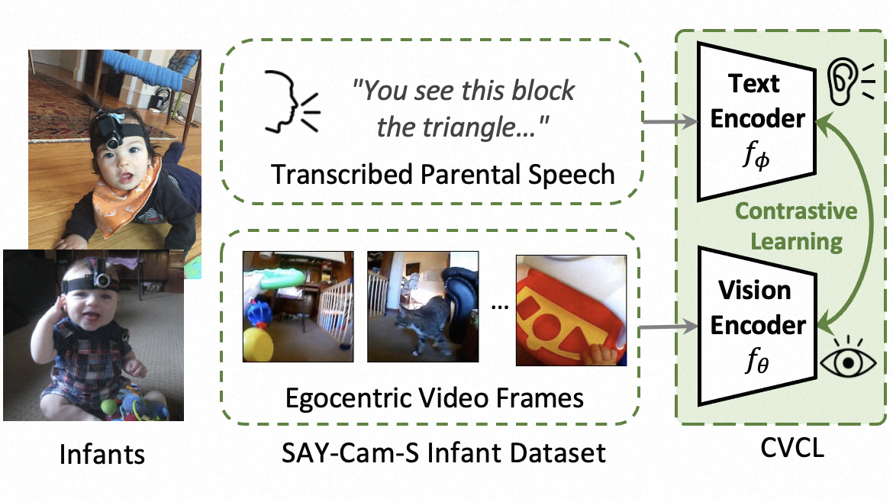
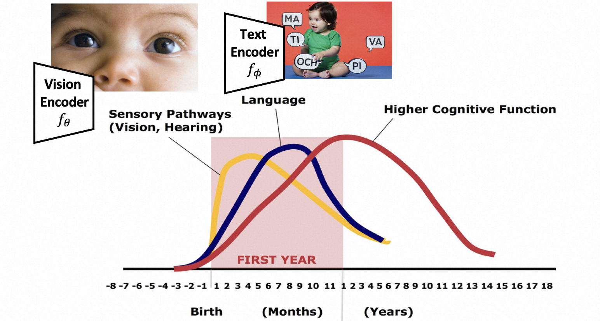
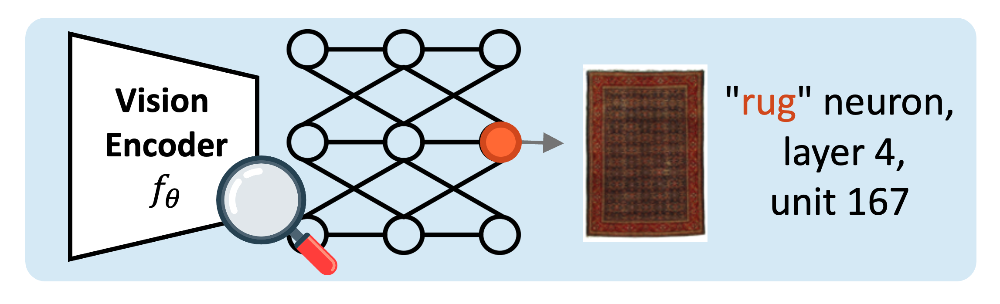
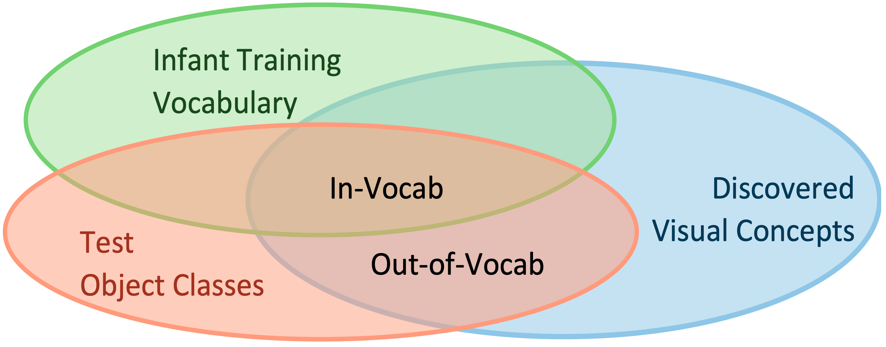
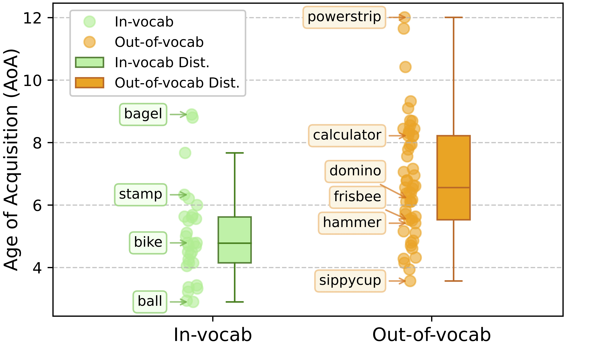
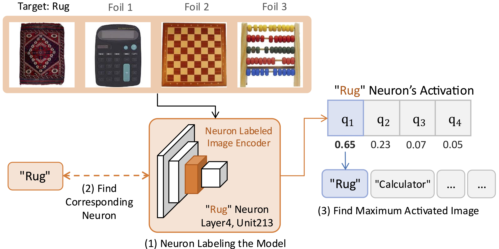
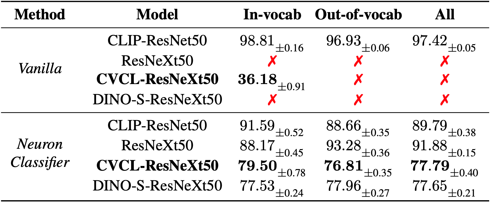
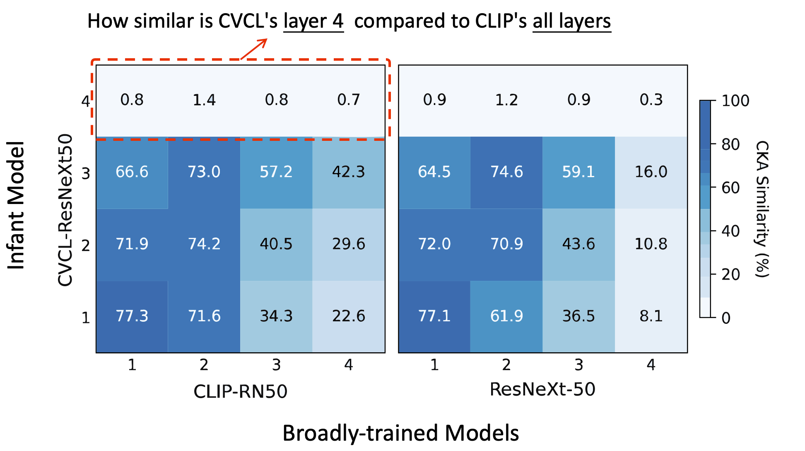
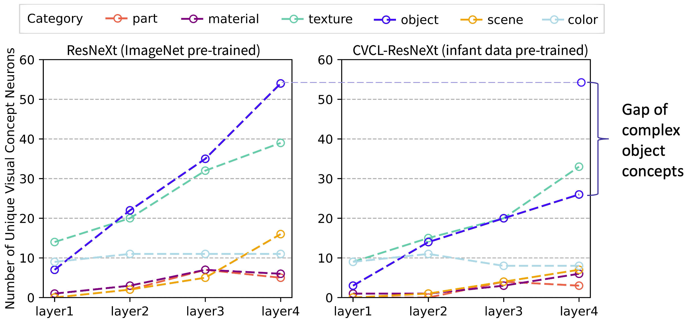

A multimodality model trained on infant daily experience.

Sequential visual and language development of infants.
When a multimodality model, trained on infant daily experience, will its vision encoder develop representations beyond its linguistic input, like real infant?
Computational models' visual representation develops beyond linguistic input, similar to real infants.
Leveraging explainable techniques, neurons in representation result in a strong training-free classifier.
CLIP/ResNet have richer high-level representations while similar to the infant model in the low-level.
Infant model's visual representations develop beyond linguistic input, similar to real infants. Through 'neuron labeling', we identified specific neurons inside the infant model's vision encoder that hide visual concepts are not presented in the model's training vocabulary.
We leverage CLIP-Dissect [2] to 'label' each neuron with corresponding semantic concepts, thus discovering many visual concepts. These concepts are categorized as in-vocabulary or out-of-vocabulary based on whether they appeared in the infant's linguistic input or not. Many out-of-vocabulary visual concepts emerge in specific neurons, demonstrating visual learning beyond linguistic supervision.

Neuron Labeling Vision Encoder (e.g. This neuron is sensitve to 'rug' visual concept)

In-vocabulary and Out-of-vocabulary
From a cognitive perspective, we rate concepts using Age of Acquisition (AoA) [3], estimating when these concepts will be acquired (e.g., simple patterns like "ball" are acquired earlier, while more complex concepts like "calculator" are acquired later).

Complex patterns in out-of-vocabulary concepts suggest visual learning beyond text supervision.
We leverage neurons discovered from the infant model's representation to develop a training-free classification framework that significantly improves performance. Our approach demonstrates that single neurons can effectively classify images without additional training, revealing the rich representational structure learned by the infant model through discovered visual concepts.
Our training-free neuron-based classification framework leverages discovered visual concepts to enable image classification without additional training.

Overview of our training-free neuron-based classification framework.
Our NeuronClassifier framework leverages neurons discovered in the representation to enable broader recognition capabilities, particularly demonstrating significant improvements in CVCL performance (in bold).

“Vanilla” refers to classification based on image-text similarity. “❌” denotes cases where direct classification is not possible due to missing text encoder or need fine-tuning. “All” represents the combined performance on both in- and out-of-vocabulary.
Our analysis reveals that general representations (CLIP, ImageNet models) exhibit significant differences from the infant model (CVCL) in the final layers (abstract concepts) while sharing similar representations in lower layers (simple patterns).
We first employ Centered Kernel Alignment (CKA) [4] to measure layer-wise representational similarity between different models. Using the ImageNet validation set as input, we quantitatively analyze how similar the learned representations are across different architectures. The results show that CVCL exhibits similarity to CLIP-RN50 and ResNeXt50 in the shallow layers (lower-level features) but diverges significantly in the final layer (higher-level features). Notably, Layer 4 of CVCL shows very low similarity to all layers of both common models, suggesting unique high-level representations in the infant model.

CKA similarity matrices comparing CVCL with CLIP-RN50 and ResNeXt50 models.
Next, we apply Net Dissect [5] to quantify the emergence of interpretable visual concepts across different layers. The number of unique concepts indicates the richness of encoded representation. Our analysis reveals that neurons in deeper model layers capture increasingly complex concepts. Early layers primarily detect lower-level features like color and texture, while higher-level concepts such as objects and scenes emerge in deeper layers. CVCL exhibits fewer visual concepts than the ImageNet model, especially for higher-level visual concepts (e.g., objects and scenes).

Net Dissect Analysis showing concept emergence across different layers and models.
@InProceedings{Ke_2025_CVPR,
author = {Ke, Xueyi and Tsutsui, Satoshi and Zhang, Yayun and Wen, Bihan},
title = {Discovering Hidden Visual Concepts Beyond Linguistic Input in Infant Learning},
booktitle = {Proceedings of the Computer Vision and Pattern Recognition Conference (CVPR)},
month = {June},
year = {2025},
pages = {4343-4352}
}Wai Keen Vong et al. "Grounded language acquisition through the eyes and ears of a single child." Science 383, 504-511 (2024). DOI:10.1126/science.adi1374
Oikarinen, Tuomas, and Tsui-Wei Weng. "CLIP-Dissect: Automatic Description of Neuron Representations in Deep Vision Networks." ICLR 2023 Spotlight.
Kuperman, V., Stadthagen-Gonzalez, H., & Brysbaert, M. (2012). "Age-of-acquisition ratings for 30,000 English words." Behavior research methods, 44, 978-990.
Kornblith, Simon, Norouzi, Mohammad, Lee, Honglak, & Hinton, Geoffrey. "Similarity of neural network representations revisited." International Conference on Machine Learning, pages 3519-3529, 2019. PMLR.
Bau, David, Zhou, Bolei, Khosla, Aditya, Oliva, Aude, & Torralba, Antonio. "Network Dissection: Quantifying Interpretability of Deep Visual Representations." Proceedings of the IEEE Conference on Computer Vision and Pattern Recognition (CVPR), July 2017.
© 2025 Xueyi Ke. All rights reserved.
Design elements inspired by Transformer Circuits Thread and Nerfies .